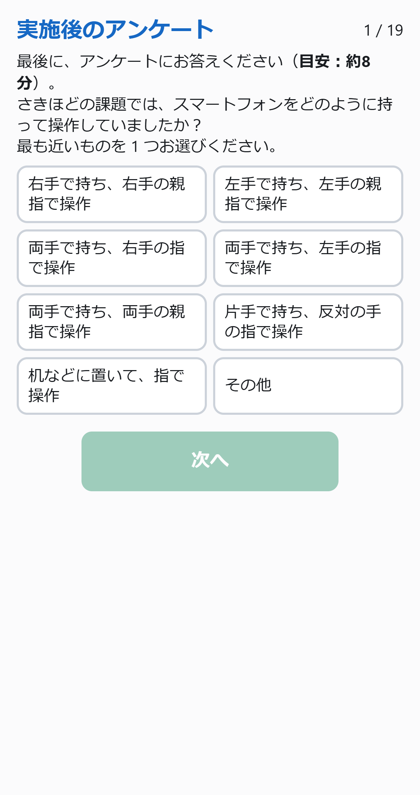
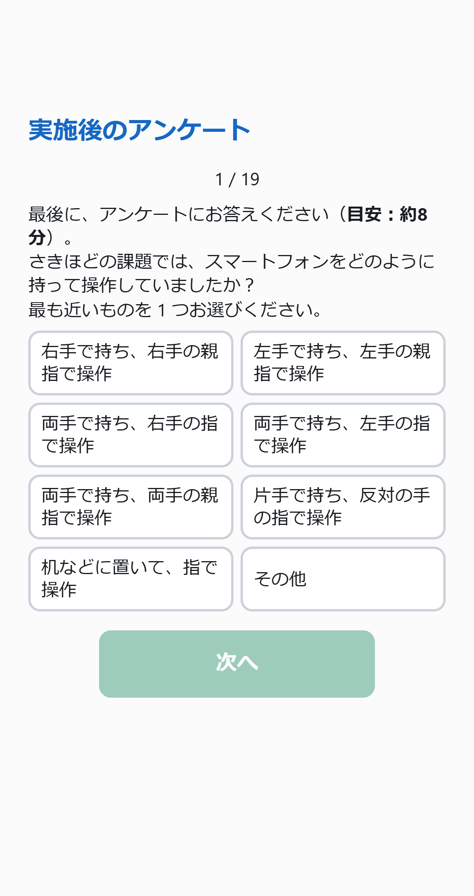
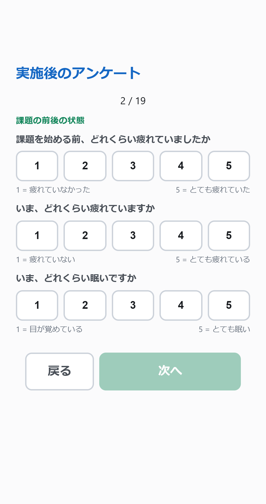

2026-11-01 · UI28a
持ち方と後続ページの見出し・番号・本文の開始位置を統一
持ち方だけを上端へ寄せる配置をやめました。画面の高さに応じた共通の余白を使い、事後アンケート内でページが変わっても見出し・ページ番号・本文領域の開始位置をそろえています。
持ち方を操作する（送信なし）実装・検証・公開状態全体の画面一覧
修正前・UI28
修正後・持ち方
修正後・2ページ目
「その他」の記入後の画面 ／ 375×548の小さい画面。キーボード表示中の一時スクロールと、閉じた状態の画面全体の収まりを区別します。
画像はChromeのタッチエミュレーションで402×759 CSS pxを撮影したものです。確認専用のバッジだけを画像から非表示にしています。Safari実機の再確認は別に扱います。
3秒の判定と、注意が出る時点
| 押下から枠外へ出るまで | 遅い初動の記録 |
|---|
| 2,999ms／3,000ms | 対象外 |
| 3,001ms／4,000ms | 対象 |
本番では、回答を終え、迷い・自信の振り返りを確定した後に注意画面を表示します。3秒経過した瞬間に割り込む仕組みではありません。3秒に1秒の猶予を加える処理はありません。
実ハンドラの境界検証と4秒保持の記録。追加課題の開始説明を2枚にする案は相談中で、今回の配布には含めていません。